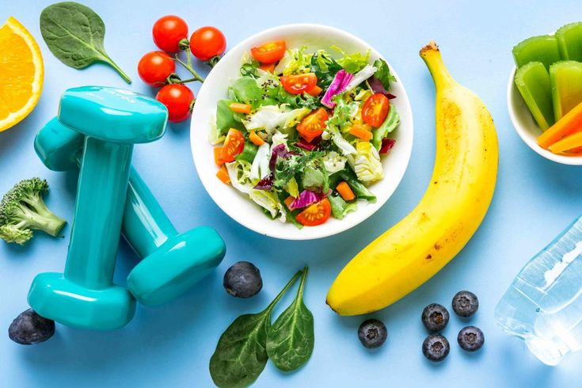
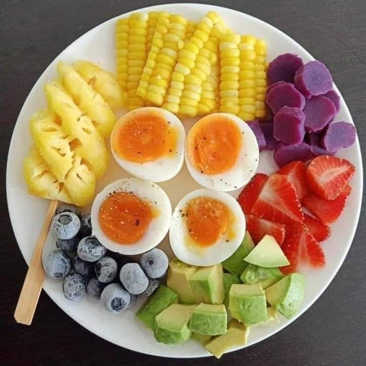
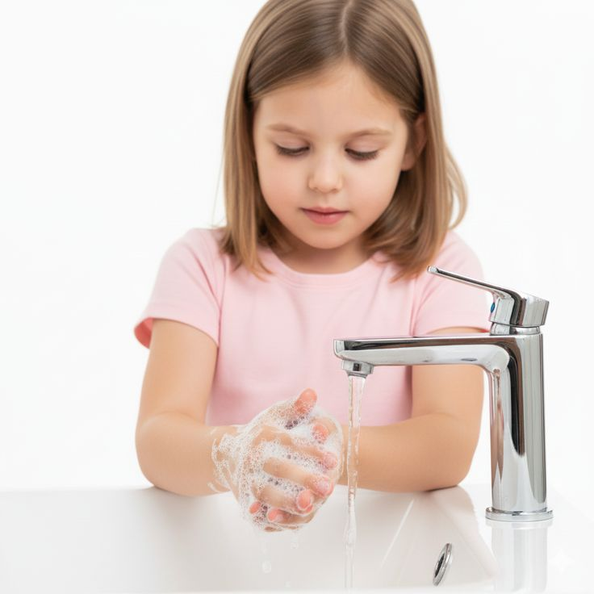

Definisi Pola Hidup Sehat
Pola hidup sehat adalah rangkaian kebiasaan dan gaya hidup yang memiliki tujuan untuk meningkatkan kesehatan dan mencegah penyakit. Menurut World Health Organization (WHO), pola hidup sehat dijelaskan sebagai cara hidup yang menurunkan risiko sakit parah atau meninggal secara dini.

Komponen Perilaku Pola Hidup Sehat
Dalam menjaga pola hidup sehat, diperlukan konsistensi untuk mencapai hasil yang baik. Konsistensi tidak harus melakukan yang rumit, melainkan dengan melakukan hal-hal sederhana dapat berperan besar padai jangka panjang yang baik. Terdapat 4 kebiasaan sederhana yang dapat kita lakukan untuk menjaga pola hidup sehat menurut WHO.

A. Pola Makan Sehat
- Kurangi Garam : Batasi konsumsi garam kurang dari 5 gram (sekitar satu sendok teh) per hari untuk mencegah hipertensi.
- Kurangi Gula : Batasi asupan gula bebas (tambahan) hingga kurang dari 10% dari total asupan energi harian.
- Lemak Sehat :Ganti lemak jenuh (lemak hewani, mentega) dengan lemak tak jenuh (minyak sayur, ikan, kacang-kanangan). Hindari lemak trans industri.
B. Aktivitas Fisik
- Dewasa (18-64 tahun): Lakukan setidaknya 150–300 menit aktivitas aerobik intensitas sedang, atau 75–150 menit intensitas tinggi setiap minggu.
- Latihan Kekuatan: Lakukan latihan otot setidaknya 2 hari seminggu.
- Kurangi Duduk: Cobalah untuk membatasi waktu yang dihabiskan untuk duduk diam (sedenter) dan gantilah dengan aktivitas fisik apa pun.

C. Kebiasaan Gaya Hidup
- Berhenti Merokok: Tidak ada tingkat paparan tembakau yang aman. Berhenti merokok menurunkan risiko penyakit jantung, kanker, dan penyakit paru-paru.
- Hindari Alkohol: WHO menyatakan bahwa tidak ada jumlah konsumsi alkohol yang aman bagi kesehatan. Semakin sedikit Anda minum, semakin baik.
- Tidur Cukup: Pastikan tidur yang berkualitas untuk mendukung fungsi mental dan fisik yang optimal.

D. Kebersihan
- Vaksinasi: Pastikan vaksinasi Anda dan keluarga tetap mutakhir (up-to-date) untuk mencegah penyakit menular.
- Kebersihan Tangan: Cuci tangan secara teratur dengan sabun dan air untuk mencegah infeksi.
- Kesehatan Mental: Kelola stres melalui teknik relaksasi, tidur teratur, dan menjaga hubungan sosial yang positif.
Video kebiasaan sederhana untuk hidup sehat
Manfaat Pola Hidup Sehat
Penerapan pola hidup sehat mungkin tidak memberikan hasil yang dapat langsung dilihat saat ini juga, tetapi merupakan bentuk investasi untuk kesehatan di masa depan. Melalui kebiasaan hidup yang baik, banyak manfaat positif dapat dicapai, bukan hanya untuk tubuh, tetapi juga bagi kesehatan mental dan kualitas hidup kita sebagai manusia. Terdapat beberapa manfaat pola hidup sehat, antara lain:
1. Meningkatkan Kesehatan Fisik
Menerapkan pola hidup sehat mempunyai dampak signifikan pada kesehatan fisik. Caranya dengan mengatur pola makan yang seimbang, rutin berolahraga, dan menjaga berat badan ideal, membuat tubuh menjadi lebih kuat dan terhindar dari risiko berbagai penyakit kronis seperti diabetes, penyakit jantung, dan tekanan darah tinggi. Tidak hanya itu, memiliki jam tidur yang berkualitas juga membuat tubuh Anda lebih segar dan bersemangat.
2. Meningkatkan Energi dan Stamina
Pola hidup sehat tidak hanya berfokus pada aspek pencegahan penyakit, tetapi juga berupaya meningkatkan energi dan stamina. Anda bisa melakukannya dengan cara mengonsumsi makanan bergizi, sehingga tubuh mendapatkan sumber energi yang cukup untuk menjalani aktivitas sehari-hari. Olahraga teratur juga membantu meningkatkan daya tahan tubuh yang membuat Anda jadi lebih siap dalam menghadapi tugas-tugas harian dengan lebih bugar dan efisien.
3. Mental Stabil
Tidak hanya berdampak pada tubuh, pola hidup sehat juga berpengaruh pada kesehatan mental. Olahraga terbukti dapat mengurangi tingkat stres dan kecemasan, sementara nutrisi yang baik berperan penting dalam fungsi otak yang optimal. Jika Anda menjaga keseimbangan antara aktivitas fisik, istirahat yang cukup, dan manajemen stres, maka Anda bisa mencapai kesehatan mental yang lebih baik.
4. Mendukung Sistem Kekebalan Tubuh
Ketahanan tubuh terhadap penyakit sangat tergantung pada sistem kekebalan tubuh yang baik. Pola hidup sehat dengan asupan nutrisi yang cukup dan olahraga teratur dapat meningkatkan daya tahan tubuh terhadap infeksi dan penyakit. Ini membantu tubuh untuk melawan patogen dan mempercepat proses penyembuhan saat sakit.
5. Meningkatkan Kualitas Hidup
Pentingnya pola hidup sehat tidak hanya terletak pada pencegahan penyakit, tetapi juga pada peningkatan kualitas hidup secara keseluruhan. Jika Anda memiliki tubuh yang sehat dan pikiran yang jernih, maka Anda bisa menikmati kehidupan dengan lebih baik. Hal ini mencakup hubungan yang lebih baik, produktivitas yang meningkat, dan kemampuan untuk menikmati momen-momen kecil dalam hidup.
📚 Daftar Pustaka
Tentang Saya
Halo semuanya! Nama saya Queenvie. Saya membuat website ini dengan tujuan sebagai wujud kepedulian untuk menyebarluaskan pemahaman tentang pola hidup sehat. Semoga bermanfaat bagi kita semua!